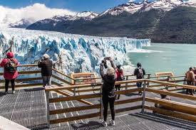
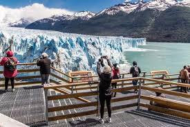

Más Calafate
Desde El Calafate al Glaciar Perito Moreno media una distancia de 80 km pavimentados. En los primeros 40 km se recorre la estepa patagónica, pasando posteriormente a la entrada del Parque Nacional, donde se observa la vegetación arbórea: ñires, guindos, lengas que conforman el bosque magallánico. Una vez en el Glaciar, se puede apreciar la majestuosidad que impacta a los ojos del viajante, desde diferentes balcones, existiendo también un área de accesibilidad y la posibilidad de realizae navegaciones.
 
